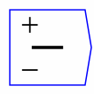
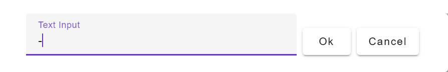

Next: multiply
Up: Binary Operations
Previous: add +
Contents

Subtract two numbers. The input ports
allow multiple wires, which are summed prior to the subtraction being
carried out. If an input port is unwired, it is equivalent to setting
it to zero. Note the small `+' and `' signs on the input ports
indicating which terms are added or subtracted from the result.
The operator can be placed on the canvas in two ways:
- From the Binary Operations (``binop'') toolbar; or
- By pressing the minus key anywhere on the wiring canvas, followed
by pressing the Enter key, or clicking on OK in the text input window.
The reason for requiring the Enter key to be pressed—rather than
immediately placing the minus operator on the keyboard, as with the
plus and multiply operators—is that a user may wish to enter a
negative number as a constant.
